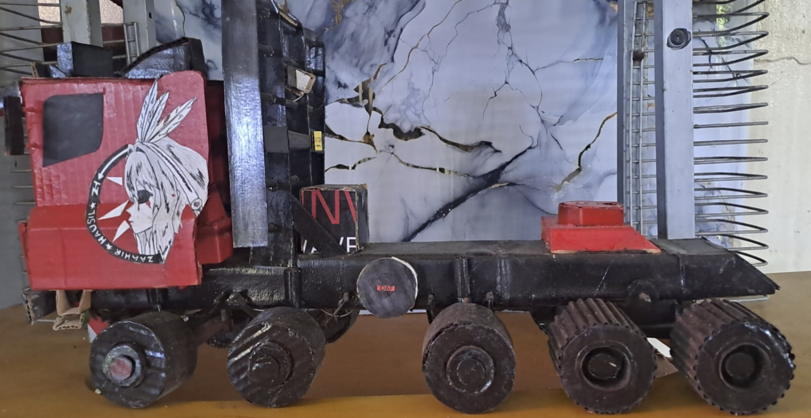
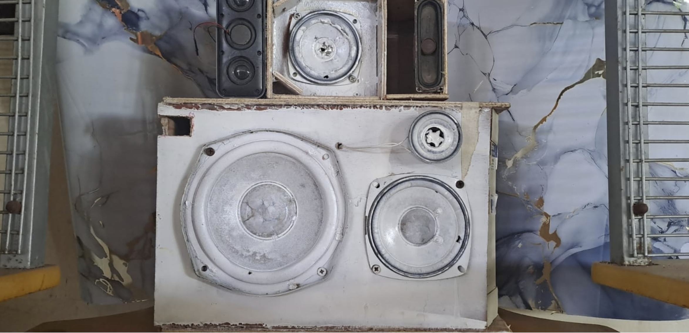
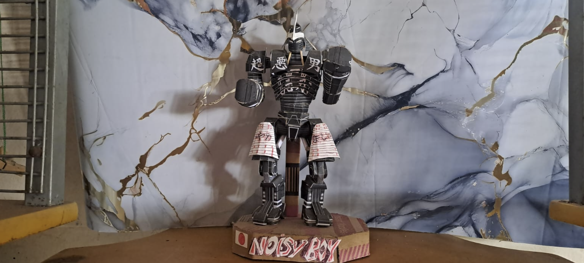
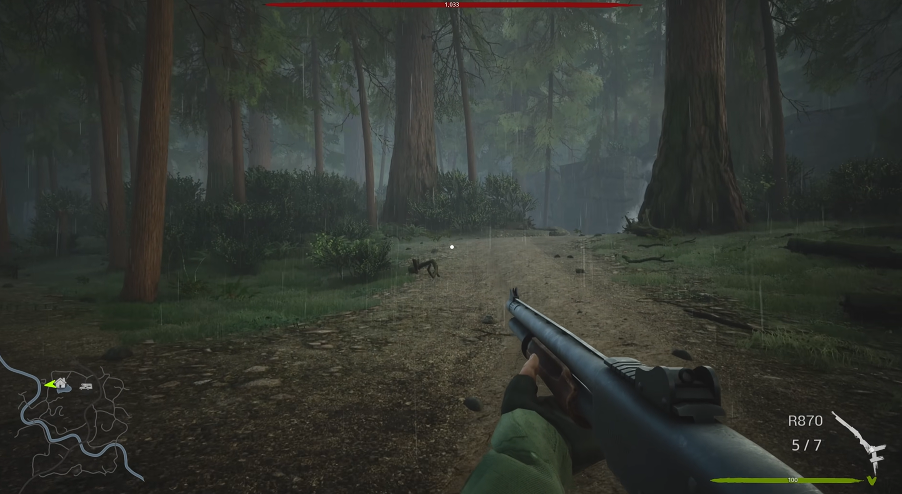
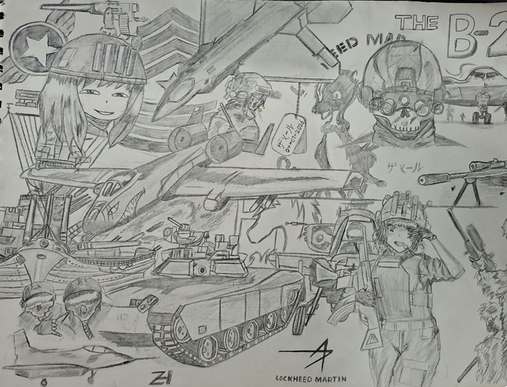
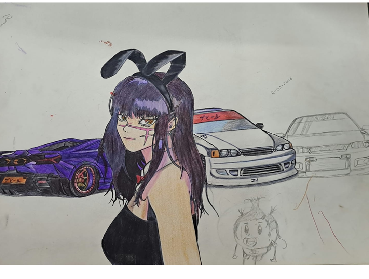
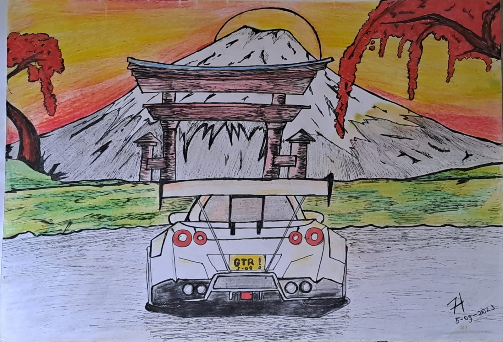

My name is Zaahir, and I am a driven software engineering student with a deep passion for building organized digital systems and unique visual designs. My academic and creative journey began locally in Suriname at the Savitrischool, after which I further developed my analytical thinking and academic foundation at the Algemene Middelbare School (AMS). Growing up in Pontbuiten as the only son alongside three older sisters has provided me with an incredibly strong support system. It taught me at an early age the true meaning of focus, perseverance, and dedication. My sisters support my craftsmanship and ambitions through thick and thin, and that family energy motivates me every single day. What truly sets me apart as a creator is my deep love for craftsmanship and 3D prototyping. Outside of my digital work, I am a dedicated physical maker; I have designed and constructed an entire, highly detailed fleet of cardboard trucks and handmade acoustic speakers entirely from scratch. Meticulously cutting, planning, and assembling these complex physical hardware projects requires immense spatial awareness and an extreme eye for detail. For me, this hands-on craftsmanship directly mirrors how I structure my digital work: organized, secure, completely bug-free, and built with precision from the ground up. In addition to my passion for advanced technology and detailed mechanical anime character illustrations, I find my ultimate balance in an active outdoor lifestyle. I love walking long distances to completely clear my mind after hours of intense concentration at my desk, and I regularly go swimming to reset my energy levels and refresh my focus. This healthy balance keeps my mind sharp. I am a creative thinker who does not stop until a project functions flawlessly, and I am fully prepared to combine my technical skills and physical craftsmanship to build innovative, high-quality solutions.
I enjoy 3d prototyping en enjoy cardboard crafting. I also love Analyzing game mechanics and level design seeing people play.

Cardboard Crafting
3D Prototyping
papercraft
GamingI enjoy sketching and drawing by hand.

Mechanical & Military Concepts
Character & Automotive Design
Character Design